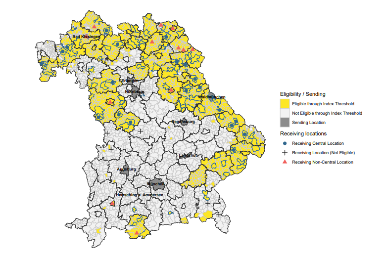

Job Market Paper
New draft available soon!
The Effect of Public Sector Relocations on Regional Development in Germany
Combining newly collected relocation data with administrative employer–employee records, I estimate the consequences of public-job relocations for both the places gaining and losing employment. I then develop a quantitative spatial model in which public and private employment generate different productivity spillovers, linking the reduced-form evidence to the spatial mechanism.